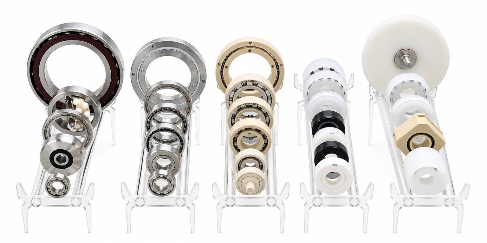
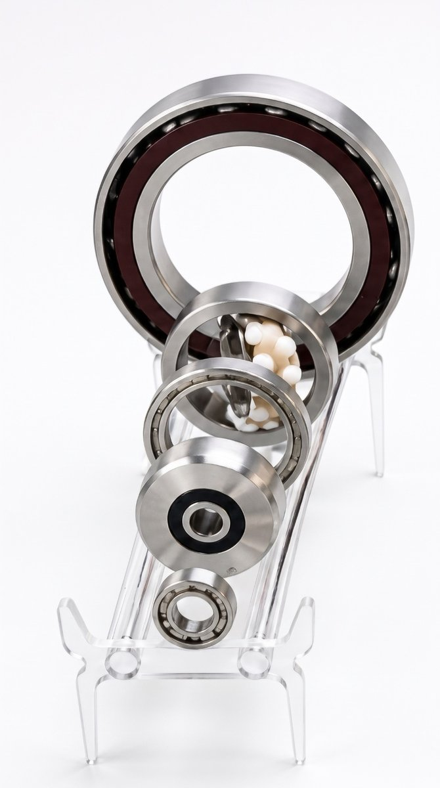
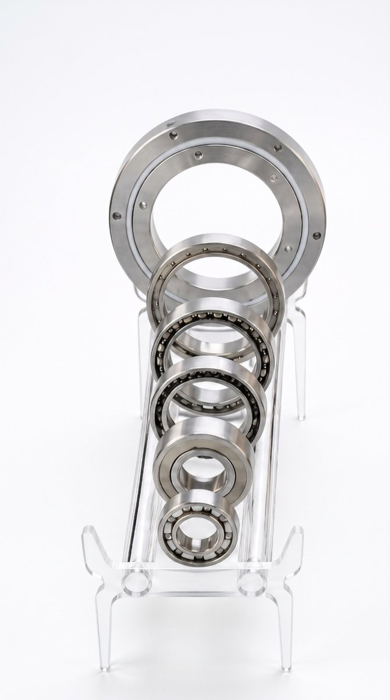
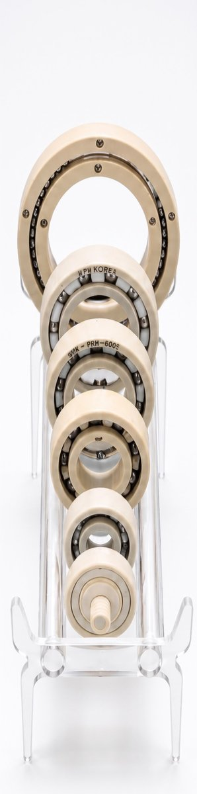
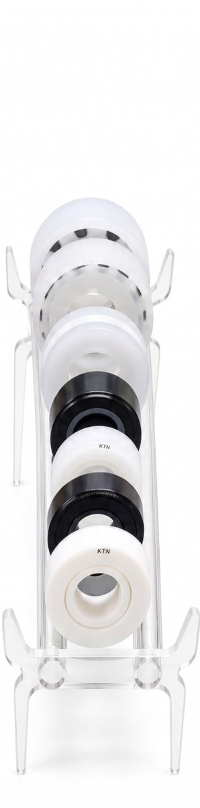
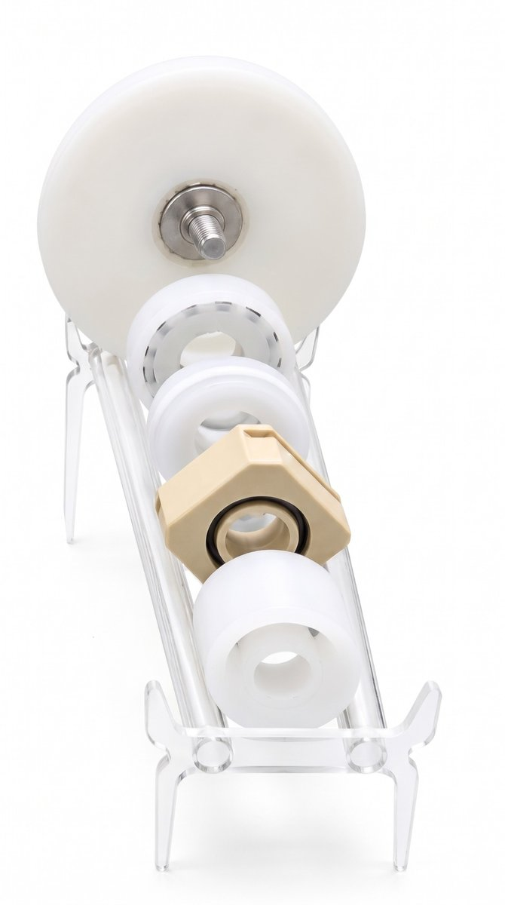
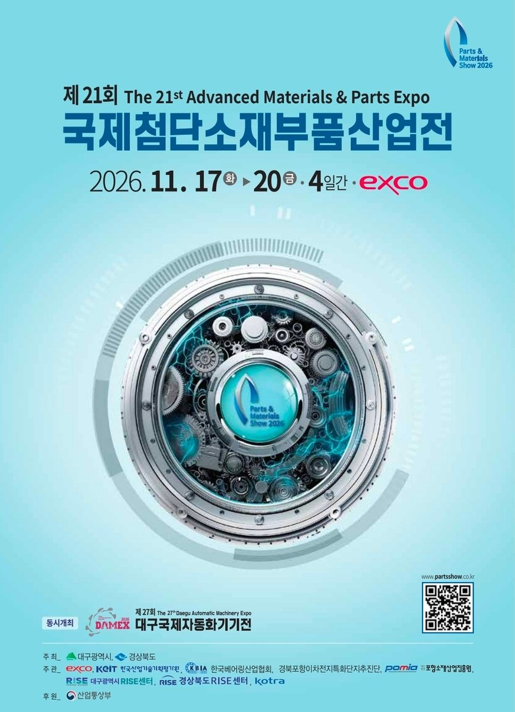

KTN 케이티엔이 제21회 국제첨단소재부품산업전(Parts & Materials Show 2026)에 출품합니다. 11월 17일(화)부터 20일(금)까지 4일간, 대구 EXCO입니다. 홈페이지 사진으로는 전달되지 않는 것 — 무게, 표면, 돌려봤을 때의 느낌 — 을 보여드리려고 스틸·하이브리드, 스테인리스, PEEK, UPE·대전방지, PTFE 휠·PEEK 하우징 5개 스탠드를 꾸렸습니다. 쓰시던 현품을 들고 오시면 옆에 놓고 바로 비교해 드립니다.

전시용으로 정리한 5개 스탠드. 왼쪽부터 스틸·하이브리드 / 스테인리스 / PEEK / UPE·대전방지 / PTFE 휠·PEEK 하우징
박
박정훈 · KTN KOREA 기술총괄
20년 베어링 & 정밀 가공 기술 마이스터. 엔지니어링 플라스틱·세라믹·스테인리스 특수 베어링 설계·가공 전문가. 도면 없이 현품만으로 역설계·비규격 가공, 누적 실적 2,479건.
포브스코리아 CSV 대상 2026
11.17 ~ 20
화~금 4일간 · 대구 EXCO
5
소재별 전시 스탠드
1개
현장 상담 품목 MOQ
왜 굳이 전시회에 나가나
저희는 홈페이지에 글을 64편 써 왔습니다. 그래도 끝내 글로 전달이 안 되는 게 있습니다. PEEK 베어링을 손에 올렸을 때 스테인리스의 절반도 안 되는 무게, UPE 롤러 표면의 미끄러짐, 세라믹 볼이 들어간 베어링을 손가락으로 돌렸을 때의 소리. 이건 사진 100장보다 10초 만져보는 쪽이 빠릅니다.
그래서 이번 전시는 "회사 소개"보다 비교 체험에 맞췄습니다. 같은 사이즈대의 베어링을 소재별로 나란히 놓았고, 쓰시던 현품을 가져오시면 그 옆에 놓고 치수·소재·파손 양상을 함께 봅니다. 2,479건의 역설계·특주 경험 중 상당수가 "실물을 보니 문제가 다른 데 있었다"로 시작했습니다.
부스에서 볼 수 있는 5개 스탠드

STAND 01
스틸 · 하이브리드 세라믹볼 세트
대형 앵귤러 콘택트 베어링, 흰 세라믹 볼이 들어간 하이브리드 베어링, V홈 트랙롤러, 소형 개방형까지 한 줄로 놓았습니다. 같은 스틸 궤도에 볼만 세라믹으로 바꿨을 때 회전 감촉이 어떻게 달라지는지 직접 돌려볼 수 있게 했습니다.
주로 가는 곳: 고속 스핀들, 반도체·디스플레이 장비 이송축, 비자성·절연이 필요한 모터 주변

STAND 02
스테인리스 세트 — 박형 턴테이블 베어링 포함
맨 위는 고정 홀을 가공한 박형 턴테이블(회전 테이블) 베어링, 아래로 사이즈별 스테인리스 개방형 볼베어링입니다. 세척·약액·고온 환경에서 일반 베어링강이 녹슬어 멈추는 자리를 대신하는 구성입니다.
주로 가는 곳: 식품·제약 설비, 세척 공정, 클린룸 회전 스테이지, 옥외 장비

STAND 03
PEEK 베어링 세트 (KTN-PRH-600S 외)
외륜·내륜을 PEEK로 깎고 볼을 세라믹 또는 스테인리스로 넣은 구성입니다. 윤활유 없이 돌고, 약액에 담가도 되고, 자성이 없습니다. 맨 아래는 축이 일체로 붙은 PEEK 롤러. 손에 올리면 무게부터 다릅니다.
주로 가는 곳: 반도체 웨트 공정, 클린룸 이송, 무급유 구간, MRI·검사장비 주변 비자성 구간

STAND 04
UPE 롤러 + 대전방지(ESD) 베어링
흰색은 UPE 롤러, 검정은 대전방지 처리된 베어링입니다. PCB·디스플레이 컨베이어에서 겨울마다 반복되는 정전기 불량은 접지를 손봐도 안 잡히는 경우가 많고, 원인이 롤러 소재인 경우가 적지 않습니다. 표면저항 수치와 함께 설명드립니다.
주로 가는 곳: PCB 컨베이어, 디스플레이 패널 이송, 전자부품 조립 라인

STAND 05
PTFE·UPE 대형 휠 + PEEK 플랜지 하우징 유닛
베어링 하나가 아니라 유닛째 플라스틱으로 바꾼 사례입니다. 대형 플라스틱 휠에 스테인리스 축·베어링을 조립한 것, 그리고 PEEK로 깎은 사각 플랜지 하우징. 염산·황산이 튀는 에칭·도금 라인에서 금속 하우징이 6개월을 못 버티던 자리에 들어갑니다.
주로 가는 곳: PCB 에칭·도금 라인, 화학 약품 이송, 세정 설비
가져오시면 좋은 것 3가지
✓
쓰고 있는 베어링 현품 (망가진 것도 좋습니다)
파손된 현품이 오히려 정보가 많습니다. 볼이 깨졌는지, 궤도가 벗겨졌는지, 케이지가 녹았는지에 따라 원인과 대체 소재가 달라집니다.
✓
도면 또는 치수 메모, 없으면 사진
내경·외경·폭 세 숫자만 있어도 됩니다. 사진 한 장으로 시작한 역설계가 저희 실적의 상당 부분입니다.
✓
문제 증상과 환경 한 줄
"3개월마다 멈춤, 약액 튀는 곳, 60℃" 정도면 충분합니다. 환경을 알아야 소재를 고를 수 있습니다.
꼭 KTN 부스가 아니어도 됩니다. 같은 전시에 한국베어링산업협회가 주관으로 참여하고 있어 베어링 업체를 여럿 비교해 보실 수 있습니다. 다만 비규격·소재 변경 상담은 현품을 놓고 소재별 샘플과 나란히 비교할 수 있는 자리가 흔치 않습니다. 부스 상주 인원이 제한되어 상담이 겹칠 수 있으니, 방문 시간을 미리 알려주시면 그 시간을 비워 두겠습니다.
전시회 정보

전시회
제21회 국제첨단소재부품산업전 The 21st Advanced Materials & Parts Expo · Parts & Materials Show 2026
일정
2026년 11월 17일(화) ~ 20일(금), 4일간
장소
EXCO 대구전시컨벤션센터 대구광역시 북구 엑스코로 10
KTN 부스
부스 번호는 주최 측 확정 후 이 페이지에 추가합니다. 그전에는 010-9564-0985로 연락 주시면 위치를 안내해 드립니다.